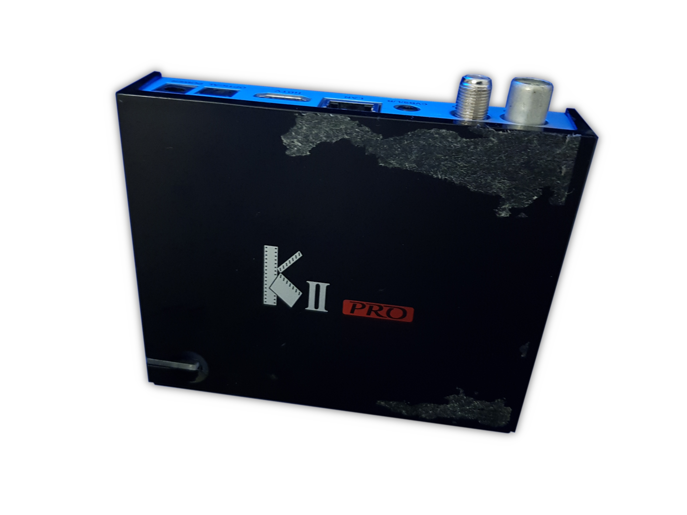

Videostrong KII Pro (videostrong-kii-pro)
|
 Videostrong KII Pro | |
| Manufacturer | Videostrong |
|---|---|
| Name | KII Pro |
| Codename | videostrong-kii-pro |
| Released | 2016 |
| Category | testing |
| Original software | Android |
| Original version | 5.1.1 (+ preinstalled KII Pro software and a different launcher) |
| postmarketOS kernel | 6.2.9 |
| Hardware | |
| Chipset | Amlogic S905 |
| CPU | 2.0 GHz Quad core |
| GPU | Mali 450 |
| Storage | 16 GB eMMC |
| Memory | 2 GB |
| Architecture | aarch64 |
{kind=link}
| USB Networking |
Unavailable
|
|---|---|
| Flashing |
Broken
|
| Touchscreen |
Unavailable
|
| Display |
Unavailable
|
| WiFi |
Works
|
| FDE | |
| Mainline |
Works
|
| Battery |
Unavailable
|
| 3D Acceleration |
Works
|
| Audio |
Works
|
| Bluetooth |
Works
|
| Camera |
Unavailable
|
| GPS |
Unavailable
|
| Mobile data |
Unavailable
|
| SMS |
Unavailable
|
| Calls |
Unavailable
|
| USB OTG |
Unavailable
|
| NFC |
Unavailable
|
| Accelerometer |
Unavailable
|
|---|---|
| Magnetometer |
Unavailable
|
| Ambient Light |
Unavailable
|
| Proximity |
Unavailable
|
| Hall Effect |
Unavailable
|
| Barometer |
Unavailable
|
| Power Sensor |
Unavailable
|
| Camera Flash |
Unavailable
|
|---|---|
| Keyboard |
Unavailable
|
| Touchpad |
Unavailable
|
| USB-A |
Works
|
| HDMI/DP |
Works
|
| Ir TX |
Unavailable
|
| Ir RX |
Works
|
| Stylus |
Unavailable
|
| Haptics |
Unavailable
|
| Ethernet |
Works
|
| FOSS bootloader |
Works
|
| Primary Bootloader |
Works
|
|---|---|
| Secondary Bootloader |
Works
|
| Mainline |
Partial
|
| Internal Storage | |
| SD card |
Works
|
| USB Host | |
| USB Peripheral |
Unavailable
|
| Display |
Works
|
| Keyboard |
Broken
|
| Buttons |
Unavailable
|
|
This device is based on the Amlogic S905. See the SoC page for common tips, guides and troubleshooting steps |
The KII Pro is a set-top box made by Videostrong, using an Amlogic S905 SoC, and running a custom (proprietary) fork of AOSP. It also comes with DVB inputs and an infrared TV remote.
Beaware of different versions
There were different versions of this TV box, all made by the same manufacturer.
Videostrong just happens to (re)sell some of their products under the Mecool brand, with different hardware.
The 2 known versions of the KII Pro are the "original" KII Pro (the version this port is made for), which uses the Amlogic S905 SoC, and the newer Mecool KII Pro, which uses the Amlogic S905D SoC instead. They both look the same except the newer one most likely has a Mecool logo on the front, and the Mecool KII Pro seems to use Android 7.1.1 instead of Android 5.1.1. If you own the Mecool KII Pro then this port won't work there without some changes. It may work by using the right DTB file though but that's untested since F doesn't own a Mecool KII Pro.
How to enter flash mode
| This isn't needed to boot up postmarketOS. It's only really used if you bricked your set-top box. |
You need a USB Type-A to USB Type-A cable.
- Unplug everything from your set-top box
- Plug your USB cable to the USB port at the top left (other USB ports won't work)
this one
_______ \/ ____________
__ __ || \
|__| |__| || \
__ |__| |__| || \
__________________________\
- Press and hold the reset button
_||_||____________
| |
| O O |
| ------------ |
| ------------. < here
| ------------ |
| ------------ |
| O O |
|__________________|
- While holding the reset button, plug the USB cable to your computer
- After 5 seconds or so, release the reset button
- Run
lsusb, you should see something like this:
$ lsusb
[...]
Bus 003 Device 004: ID 1b8e:c003 Amlogic, Inc.
[...]
You'd also need a computer running Microsoft Windows with the Amlogic USB Burner or Amlogic Update if you wish to use GNU+Linux. Both software are proprietary.
| If the eMMC and SD card are not bootable, the set-top box will likely boot into the flash mode. Again, untested. |
How to enter recovery mode
Also not needed. Press the reset button once while booting. You'll be booted to an Android recovery, where it may be possible to flash postmarketOS, but this is untested.
Installation
Only installing to an SD card works currently.
Use pmbootstrap to build your own image, like so:
$ pmbootstrap init
installing to an SD card. change 'mmcblkX' with the path of your SD card.
THIS WILL ERASE ALL DATA IN YOUR SD CARD
$ pmbootstrap install --sdcard=/dev/mmcblkX
What you need to do, basically is:
- Select the correct release channel (this device is currently only supported by edge)
- Select the right manufacturer (videostrong)
- Select the right device codename (kii-pro)
- Choose if you want nonfree firmware or not (required for working Wi-Fi and bluetooth)
- Answer all the other questions as you wish
Then:
- Put the SD card you installed postmarketOS on in the SD card slot
- The steps below need to be done only once (unless you format the internal eMMC)
- Unplug the power supply
- Press and hold the reset button below your TV box
- While holding the reset button, plug in your power supply back
- Keep holding the reset button until your screen gets a signal
A mainline U-Boot should load, and postmarketOS should boot up.
What works
See the device status at the top (mobile) or at the right (desktop).
{kind=link}
UART
UART works, but is disabled by default when booting postmarketOS. You can enable UART in postmarketOS by editing the
extlinux/extlinux.conf file located in the boot partition.
Find this line:
append console=null PMOS_NO_OUTPUT_REDIRECTAnd change it to:
append console=ttyAML0,115200 PMOS_NO_OUTPUT_REDIRECTThen connect RX, TX, and Ground to your USB-to-TTL, according to the pinout shown. DO NOT CONNECT THE 3V3 PAD
Afterwards, you can now run:
# microcom -s 115200 /dev/ttyUSB0 # replace /dev/ttyUSB0 with the path of your USB-to-TTL device
LEDs
The 2 LEDs the device has are functionnal.
Use /sys/class/leds/red:status to control the LEDs, like this for example:
# echo 1 > /sys/class/leds/red:status/brightness # red: on, blue: off
# echo 0 > /sys/class/leds/red:status/brightness # red: off, blue: on
DVB hardware
See Videostrong KII Pro (videostrong-kii-pro)/DVB.
IR Receiver
Works! No setup is needed apart from using an interface that's optimized for remote controls.
Wi-Fi and Ethernet
Wi-Fi works, but requires a nonfree firmware. It also doesn't seem to work properly sometimes. This issue also happens on the Xiaomi POCO F1 (xiaomi-beryllium). Doesn't happen on LibreELEC, which doesn't use NetworkManager, so it may be a problem with NetworkManager after all.
The TV box has an 8P8C port used for connecting to the internet (so-called 'Ethernet port') which works fine on postmarketOS as long as you boot it using a mainline U-Boot chainloaded from the vendor U-Boot. This weird quirk has to do with the device tree.
Bluetooth
Bluetooth works, but requires nonfree firmware. It also requires a DTS patch which has been sent upstream.
FOSS bootloader
The KII Pro uses U-Boot as its primary bootloader. U-Boot v2020.07 (with some minor modifications) works on the TV box. Newer versions also work, although HDMI output (until postmarketOS boots) and ethernet are broken.
Audio
Works. Needs a DTS kernel patch, which has been sent upstream. There are no ALSA UCM configs, so you may need to tinker around a little bit with alsamixer for HDMI audio to work, which is fairly straightforward. And when you're done, you can save your configuration with this command:
# alsactl store
| TODO: ALSA UCM |
Hardware acceleration
Seems to work! Weston and Plasma, as well as Plasma Bigscreen run fine on the device and the postmarketOS demos work fine too. Video encoding/decoding doesn't work however.
X11
Works fine. A custom configuration file is needed else it crashes (included).
HDMI-CEC
Sort of works. The TV detects a CEC device, but you cannot use the TV's remote to control the set-top box (at least, on Plasma Bigscreen).
Seems like libcec does detect which button in the remote is pressed.
UIs
Most UIs are expected to work, although you may want to use one suited for televisions (such as Plasma Bigscreen).
(This list isn't in any particular order)
| Name | Display server | Notes |
|---|---|---|
| Phosh | Wayland | Works. |
| KDE Plasma Desktop | Wayland | Works. A little unstable. |
| KDE Plasma Mobile | Wayland | Doesn't work. After the lockscreen it's completly unusable. |
| KDE Plasma Bigscreen | Wayland | Works. |
| Weston | Wayland | Works. The cursor disappears sometimes when using an XWayland app. A little unstable (less than Plasma Desktop) |
| LXQt | X11 | Works. |
| Kodi on framebuffer | - | Works. |
| GNOME and GNOME Classic | Wayland | Works. A little laggy. |
| SXMO | X11 | Works. |
| SXMO | Wayland | Works. |
| MATE | X11 | Works. |
| XFCE4 | X11 | Works. |
Disassembly guide
| TODO: Good disassembly guide. |
- Flip your set-top box and unscrew the following screws:
| | | |
__| |_| |_______________________________
| |
| ( ) ( ) |
| |
| |
| |
| |
| |
| |
| |
this > (o) o ( ) |
| /\ |
|_________________________ and this ____|
- Unscrew the nut in the DVB-S2 port
- Pry the top casing
Pictures
Running KDE Plasma!
Running MATE.
On a TTY. Running neofetch to look cool.
{kind=link}
{kind=link}
{kind=link}
Boot process (very simplified)
(Useful for porting other OSes to it)
if emmc +------+
+---------->| emmc |---------------+
| +------+ |
+---------+ | else if sd card +---------+ |
| bootrom |------+------------------>| sd card | |
+---------+ | +---------+ |
+-----[...] |
|
+------------------[...]---------------------+
|
| +---------+ +-------------------+ +-----------------+
v +---->| sd card |---->| 's905_autoscript' |---->| v2020.07 u-boot |
+---------------+ if sd and multiboot mode | +---------+ +-------------------+ +-----------------+
| vendor u-boot |---------------------------+ |
+---------------+ else if emmc | +------+ +-----------------------------+ v
+---->| emmc |---->| vendor's android 5.1.1 fork | +----------+
+------+ +-----------------------------+ | extlinux |
+----------+
|
v
+--------------+
| postmarketOS |
+--------------+
Replace the vendor U-Boot
See Running mainline U-Boot as the primary bootloader
Community info
Maintainers
-
F (
f_on OFTC and Libera,@notrealvitali64:matrix.orgon Matrix (NOT USED. PLEASE USE IRC))
Contributors
-
exkc (
@root:exkc.moe/@exxxxkc:yatrix.org/@exxxxkc:matrix.org/@af2e02839bcfb0aae789a9ea66f63afff6bc14a5c1685be36c6db57fcf2cdc6f78176afe0ffab58e82d82df2457744c693593ebc9ac063e65a1e6260503ef373:the-apothecary.club/@exxxxkc:cuteworld.spaceon Matrix)
Users owning this device
- F (Notes: Wiped eMMC. Porting postmarketOS and Arm Trusted Firmware-A to it.)
See also
- pmaports!3833 Initial merge request
- Device package
- Kernel package
- linux-meson.com Porting mainline Linux and U-Boot to Amlogic SoCs
- (Outdated) notes
- LibreELEC has a working port for Amlogic set-top boxes